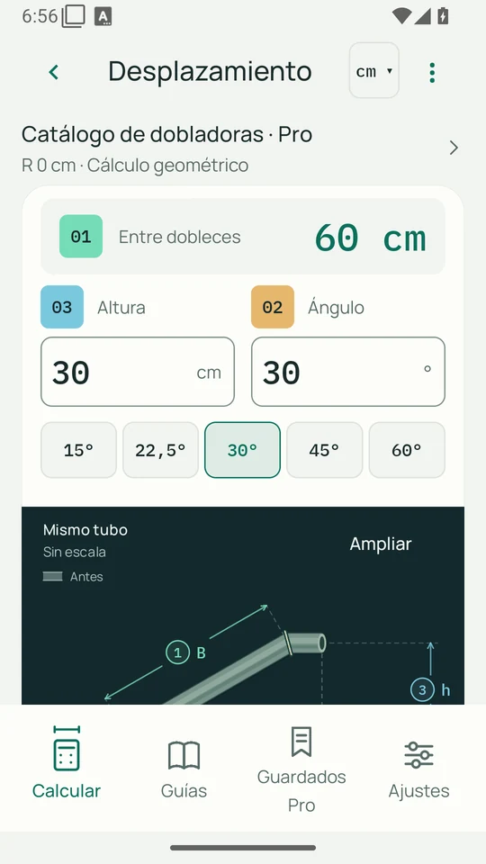

Desplazamiento
Introduce altura, ángulo y radio al eje para calcular el recorrido entre dobleces. Usa centímetros, milímetros, pulgadas o pies.
Doblacota para Android
Calcula la separación entre dobleces y la pérdida de alcance con el radio de tu dobladora. Consulta las cotas sobre el esquema del tubo.
Desplazamiento en un plano incluido gratis.

Introduce altura, ángulo y radio al eje para calcular el recorrido entre dobleces. Usa centímetros, milímetros, pulgadas o pies.
Con Pro puedes calcular desplazamientos en dos planos, alinear tubos paralelos y obtener el ángulo a partir de cotas conocidas.
Pro permite guardar fichas, exportar planos A4 o A3 y sincronizar fichas de forma opcional con Google Drive.